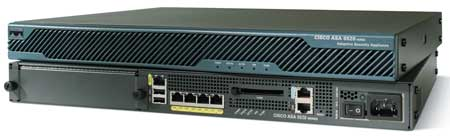

Семейство многофункциональных устройств Cisco Adaptive Security Appliance 5500 Series для защиты сетевой инфраструктуры малых и средних компаний - механизмы работы и преимущества.
Год назад, в мае 2005 г., корпорация Cisco Systems (http://www.cisco.com) объявила о выпуске на рынок семейства многофункциональных устройств Cisco Adaptive Security Appliance (ASA) 5500 Series, предназначенных для защиты сетевой инфраструктуры малых и средних компаний от широкого спектра угроз, включая атаки злоумышленников, несанкционированный доступ, деструктивные действия вирусов и прочего вредоносного ПО. В этой статье мы подробнее рассмотрим как общие принципы работы ASA 5500 Series, так и конкретную их техническую реализацию.
Прежде всего стоит отметить, что семейство ASA 5500 Series призвано обеспечить масштабируемость интегрированных сервисов и унифицированное управление ими, гарантируя заказчику одновременную работу многих механизмов безопасности и их высокую производительность и эффективность, причем без усложнения процесса эксплуатации сетевой инфраструктуры.
Согласно определению менеджера по развитию бизнеса Cisco System в России Алексея Лукацкого, появление системы ASA 5500 Series было обусловлено вполне конкретными задачами. "Основная идея заключается в том, - говорит г-н Лукацкий, - чтобы дать предприятиям малого и среднего бизнеса решение, которое устранит почти все их проблемы с безопасностью и при этом приобретение такого решения будет финансово целесообразным. Ведь угрозы и для крупных корпораций, и для малых предприятий, и даже для домашних пользователей одинаковы, а вот финансовые их возможности различаются на порядки. Поэтому и появилась ASA 5500, которая включает в себя механизмы защиты периметра с помощью межсетевого экрана, отражения атак с помощью системы предотвращения вторжений, построения VPN для защиты удаленного доступа и межофисного взаимодействия, а также борьбы с вредоносными программами с помощью антивируса, антиспама, antispyware, антифишинга и контроля доступа к Интернет-сайтам".
Основные характеристики
Семейство Cisco ASA 5500 Series, ключевой компонент стратегии безопасности Cisco Self-Defending Network (SDN), состоит из трех моделей: ASA 5510, 5520 и 5540 (их характеристики приведены в таблице) и с одинаковым успехом может использоваться заказчиками самого широкого круга - от предприятий малого и среднего бизнеса до крупных корпораций. Однако благодаря невысокой цене и интеграции нескольких ключевых сервисов в одном устройстве оно будет особенно интересно компаниям из сектора SMB.
|  | Устройство защиты Cisco ASA 5520.
|
Технические характеристики устройств семейства Cisco ASA 5500 Series
| ASA 5510 | ASA 5520 | ASA 5540 | |
| Производительность МСЭ, Мбит/с | До 300 | До 450 | До 650 |
| Производительность МСЭ и отражения атак, Мбит/с | До 150 | До 225 с AIP-SSM-10; до 375 с AIP-SSM-20 | До 450 с AIP-SSM-20 |
| Производительность VPN, Мбит/с | До 170 | До 225 | До 325 |
| Число одновременно поддерживаемых сессий | 32 000/64 000* | 130 000 | 280 000 |
| Число туннелей IPSec VPN | 50/150* | 300/750* | 500/2000*/5000*** |
| Число туннелей SSL VPN | 50/150* | 300/750* | 500/1250*/2500*** |
| Виртуальные МСЭ | 0 | 2/10** | 2/50*** |
| Кластеризация и балансировка VPN | Нет | Да | Да |
| Поддерживаемые физические интерфейсы | 3 Fast Ethernet + 1 порт управления/5 Fast Ethernet* | 4 Gigabit Ethernet + 1 Fast Ethernet | 4 Gigabit Ethernet + 1 Fast Ethernet |
| Поддерживаемые логические интерфейсы VLAN 802.1q | 0/10* | 25 | 100 |
| * С лицензиями 5510 Security Plus, 5520 VPN Plus и 5540 VPN Plus соответственно; ** с дополнительной лицензией (в базовой комплектации - 2); *** с лицензией 5540 VPN Premium. | |||
В техническом плане система ASA 5500 Series опирается на мощные средства безопасности, присутствующие в таких семействах продуктов Cisco, как PIX Security Appliance, IPS 4200 Series и VPN 3000 Concentrator. Благодаря этим средствам заказчикам предлагается широкий спектр сервисов VPN, которые обеспечивают защищенный дистанционный доступ с применением технологий IPSec и SSL VPN, а также сервисов передачи данных на большие расстояния с гарантированным качеством обслуживания (QoS). Особо стоит отметить, что за счет поддержки важнейших телекоммуникационных технологий (в частности, соглашения QoS, инструментов маршрутизации, протокола IPv6 и средств широковещательной рассылки) продукты серии ASA 5500 Series обладают широкими возможностями интеграции и встраиваются в существующую сетевую инфраструктуру без ущерба для обычного трафика и бизнес-приложений.
"Как правило, это решение ставится между маршрутизатором, смотрящим в Интернет, и защищаемой сетью, - поясняет Алексей Лукацкий. - Наличие нескольких интерфейсов позволяет сегментировать сеть на внутреннюю и демилитаризованную сеть, при этом механизм "прозрачного" межсетевого экрана (transparent firewall) позволяет даже не менять топологию сети. ASA в этом случае будет невидима для злоумышленников, но доступ через нее при обеспечении высокого уровня защиты будет прозрачным для пользователей".
По оценке г-на Лукацкого, основные технические преимущества Cisco ASA 5500 Series, выделяющие ее в глазах потенциальных заказчиков, заключаются в повышении уровня защищенности от самых разнообразных угроз, а также в возможности организации защищенного взаимодействия офисов по открытым каналам связи (таким, как Интернет) посредством одного-единственного устройства. Расширяемая архитектура Cisco AIM и гибкая мультипроцессорная архитектура устройств семейства Cisco ASA 5500 Series обеспечивают высокую производительность нескольких одновременно работающих механизмов защиты. Каждая платформа Cisco ASA 5500 Series сочетает в себе несколько совместно функционирующих производительных процессоров, предоставляя защиту приложений, защиту от неизвестных атак, масштабируемые службы IPSec/SSL VPN и т. д. Предусмотрена возможность добавления других служб защиты, таких, как службы предотвращения вторжений и расширенные службы защиты от неизвестных атак - для этого в устройство Cisco ASA 5500 Series устанавливаются модули адаптивной проверки и предотвращения атак (AIP-SSM). За счет такой гибкой архитектуры устройства семейства Cisco ASA 5500 Series способны легко адаптироваться к новым вторжениям, предоставляя защиту в среде быстро развивающихся угроз.
Эффективное управление, позволяющее увеличить срок эксплуатации устройств, обеспечивает тем самым высокий уровень защиты инвестиций. "Благодаря объединению эффективных, проверенных рынком механизмов защиты и построения VPN, а также встроенной поддержке соединений Gigabit Ethernet и бездисковой (а значит, более надежной) структуре с флэш-памятью устройства семейства Cisco ASA 5500 Series идеально подходят компаниям, которым необходимы лучшие среди аналогов решения, обеспечивающие высокую производительность, гибкость, надежность и защиту капиталовложений", - утверждает Алексей Лукацкий.
Механизмы защиты
Система Cisco ASA 5500 Series предоставляет развитые механизмы адаптивной защиты от угроз, известные под общим названием Adaptive Threat Defense. Сюда входят средства защиты от неизвестных угроз (Anti-X), методы защиты бизнес-приложений (Application security) и технологии контроля и защиты сети (Network containment and control), которые гарантируют унифицированную и полную защиту всех важных ресурсов предприятия от широкого спектра несанкционированных действий. В одном устройстве, которое включает в себя встроенную подсистему корреляции событий безопасности, заказчики получают средства защиты сети от многих неизвестных угроз (для борьбы с компьютерными червями и вирусами) и от шпионского и рекламного ПО, инструменты анализа трафика, выявления активности хакеров и предотвращения вторжений, а также средства предупреждения атак типа "отказ в обслуживании" (DoS).
Механизмы защиты бизнес-приложений, встроенные в ASA 5500 Series, обеспечивают усиленный контроль и управление деятельностью интенсивно поглощающих трафик пиринговых программ (P2P) и Интернет-пейджеров. Они также управляют доступом к Web-страницам, проверяют защищенность и целостность основных бизнес-приложений, таких, как системы управления базами данных, решают многочисленные специфические задачи защиты соединений VoIP и мультимедиа-служб.
Помимо этого, в системе ASA 5500 Series существуют службы контроля и защиты сети, обеспечивающие доскональный контроль за действиями пользователей и сегментацию корпоративной сети, а также контроль доступа к бизнес-приложениям и потоков сетевого трафика. К этим службам относится межсетевой экран (МСЭ) с технологией инспекции пакетов с учетом состояния протокола на уровнях 2-7, который позволяет следить за состоянием всех сетевых коммуникаций и предотвращать несанкционированный доступ к сети. Cisco ASA 5500 Series также поддерживает механизм виртуальных МСЭ, обеспечивающий сегментацию сети и масштабируемость сетевых служб при снижении стоимости развертывания решения.
Система ASA 5500 Series предлагает набор механизмов, обеспечивающих конфиденциальность трафика. Они основаны на использовании как протокола IPSec, так и SSL, и интегрированы с адаптивными технологиями защиты от угроз. Объединение IPSec и SSL VPN в устройствах Cisco ASA 5500 Series позволяет им легко приспособиться к любому сценарию применения VPN, включая конфигурации "точка-точка", удаленный доступ к корпоративной сети и доступ к сети партнера или сети экстранет. Посредством единственного устройства и управляемой инфраструктуры можно обеспечить высокозащищенный дистанционный доступ к сети для любого пользователя, где бы тот ни находился. Устройства Cisco ASA 5500 Series могут интегрироваться и с существующими кластерами Cisco VPN3000 Concentrator, что позволяет заказчикам использовать имеющиеся у них структуры VPN, внедряя самые современные службы VPN и безопасности.
Cisco ASA 5500 Series включает также богатый набор функций безопасности, которые получили название Threat-protected VPN (виртуальные частные сети с защитой от угроз). Сюда входит защита оконечных сетевых устройств, средства борьбы с угрозами, МСЭ для приложений и услуги управления доступом, которые защищают соединения VPN и пользовательские данные от сетевых червей, вирусов, шпионских программ и хакерских атак. Новые функции аварийного подхвата SSL VPN с учетом состояний поддерживают непрерывность бизнеса и повышают общую производительность труда.
С помощью ПО Cisco ASA 5500 Series версии 7.1 каждое устройство ASA 5500 Series поддерживает до 5000 одновременных сессий SSL VPN. Таким образом, организации любого размера могут предоставлять своим мобильным и удаленным сотрудникам простой и безопасный доступ к приложениям и сетевым ресурсам практически из любой точки земного шара. Встроенные функции балансировки нагрузки VPN и полномасштабная функциональность IPSec VPN позволяют сократить количество аппаратных устройств, необходимых для защиты виртуальных частных сетей и поддержки десятков тысяч пользователей одновременно. Кроме того, сокращается количество платформ VPN, которые требуются для поддержки функций VPN разных типов, включая IPSec, клиентские и неклиентские режимы SSL, удаленный доступ, связь между сайтами и экстранет.
В ПО ASA 5500 Series 7.1 усовершенствован механизм доставки контента в сетях SSL VPN. Появились мощные функции трансформации Web-контента для Web-страниц, включающих компоненты Java, ActiveX и сложные конструкты HTML и JavaScript. Оптимизация производительности приложений, поддержка разнообразных браузеров и настраиваемый пользовательский портал дополнительно расширяют для организаций возможности предоставления удаленным и мобильным сотрудникам удобного доступа к корпоративным ресурсам.
Немаловажно, что маршрутизаторы Cisco для интегрированных услуг (серии 800, 1800, 2800 и 3800) и маршрутизаторы Cisco 7200 и Cisco 7301 также поддерживают SSL VPN, что позволяет заказчикам на базе этой платформы строить безопасную систему маршрутизации. Услуги SSL VPN, реализованные в маршрутизаторах Cisco, поддерживают до 150 одновременных неклиентских и клиентских сессий SSL VPN, что отвечает потребностям малых и средних предприятий. Неклиентский доступ представляет собой надежно защищенный способ доступа к часто используемым сетевым приложениям, таким, как Citrix и Outlook, а также к внутрикорпоративным Web-страницам в сетях интранет. Клиентские же услуги SSL VPN предоставляют защищенные каналы доступа практически для любого бизнес-приложения. Они дополняют технологию IPSec VPN и современные услуги безопасности Cisco IOS (МСЭ, IPS и т. д.), отличаясь простотой внедрения и доступностью. Появление новых услуг SSL VPN в интегрированных сервисных маршрутизаторах Cisco значительно сокращает сроки окупаемости сетевой инфраструктуры и эксплуатационные расходы заказчика.
Во всех платформах Cisco SSL VPN реализована функция Cisco Secure Desktop, которая автоматически проверяет состояние системы безопасности каждого устройства, пытающегося подключиться к сети, и защищает данные в ходе сессии. Для этого создается "безопасная виртуальная машина", защищающая конфиденциальные данные и "чистящая" компьютер по завершении сеанса связи (в процессе "очистки" стираются все следы сессии, в ходе которой использовались данные конфиденциального характера).
В начале 2006 г., в рамках активизации продвижения ASA 5500 Series на рынок, Cisco Systems представила новый, разработанный в сотрудничестве с компанией Trend Micro (http://www.trendmicro.com), модуль обеспечения безопасности контента и управления услугами безопасности - CSC-SSM (Content Security and Control Security Services Module). Он поддерживает полный набор услуг Anti-X, включая борьбу с вирусами и шпионскими программами, блокировку файлов, борьбу со спамом и фишинг-атаками, блокировку и фильтрацию адресов URL, а также фильтрацию контента, предотвращая доступ к потенциально опасным или не имеющим отношения к работе материалам. Модуль работает как Интернет-шлюз и защищает внутренние сетевые ресурсы от вредоносных программ и хакерских атак, распространяющихся через Интернет, что помогает поддерживать непрерывность бизнес-процессов и освобождает заказчиков от необходимости периодически отвлекаться на сложные, ресурсоемкие процедуры проверки компьютерных систем на наличие вирусов.
Эксплуатация и управление
Помимо функциональных, система Cisco ASA 5500 Series имеет ряд экономических и эксплуатационных преимуществ. В их числе возможность наращивания сервисов посредством ПО и аппаратных модулей, стандартизация платформы на разных объектах, упрощенный процесс эксплуатации с использованием общей службы управления и мониторинга для множества сервисов безопасности, а также упрощенный процесс поиска и устранения неисправностей. Профиль сервисов устройства позволяет оптимизировать их под определенную инфраструктуру и определенные функции, так что заказчики могут стандартизовать устройство защиты ASA 5500 Series для многих сфер применения в сети. Иначе для решения тех же самых задач потребовалось бы множество разнообразных платформ и систем управления. Такой адаптивный подход - "одно устройство, много назначений" - сокращает число платформ, которые приходится устанавливать и администрировать, и в то же время создает общую среду эксплуатации и управления для всех этих устройств. Это упрощает конфигурирование, мониторинг, техническое обслуживание и обучение персонала службы безопасности.
Многие из унифицированных служб управления, доступных на Cisco ASA 5500, реализуются через Adaptive Security Device Manager, предназначенный для управления одним устройством, и через Cisco Security Management Suite - для управления несколькими устройствами. Adaptive Security Device Manager, интегрированный менеджер устройства на базе Web, обеспечивает конфигурирование всех защитных механизмов и VPN-сервисов. Он может применяться для небольших внедрений, содержащих до десяти устройств, и обеспечивает общий контроль за состоянием устройства и служб, а также составление отчетов.
Инструментарий Cisco Management Security Suite предназначен для более крупных сетей и предлагает мощные средства управления на базе правил многосервисными, многофункциональными и территориально распределенными конфигурациями. Эта система поддерживает гибридные платформы, в которых могут использоваться разные приложения, маршрутизаторы и коммутаторы, а также предлагает средства отслеживания обновлений и управления ими в многопользовательской среде или в подразделении. Вместе все эти средства предоставляют заказчикам полный набор инструментов для управления объединенными службами защиты на одном или нескольких устройствах.
Компания Cisco и ее партнеры предлагают полный спектр "пожизненных" услуг безопасности (Comprehensive Lifecycle Security Services), помогающих успешно внедрять решения в области безопасности и управлять ими. Заказчики, приобретающие устройства Cisco ASA 5500 Series и Cisco Integrated Services Routers, а также любые другие продукты безопасности Cisco, могут воспользоваться "пожизненными" услугами (Cisco Lifecycle Services), включая услуги для удаленных операций Cisco Remote Operations Services, в результате чего они получают упреждающий мониторинг безопасности и систему управления сетью с автоматической защитой.
В целом, оценивая влияние, которое система ASA 5500 Series может оказать на реализацию основных бизнес-процессов заказчика, Алексей Лукацкий характеризует его как "защиту бизнес-процессов от простоев в результате нарушений их защищенности". А вот экономика данного решения, по его мнению, достаточно проста и складывается из следующих факторов:
- снижение затрат на приобретение системы защиты - вместо шести решений (МСЭ, IPS, VPN, антивирус, антиспам, контроль URL) приобретается всего одно;
- снижение затрат времени и средств на обучение - вместо прохождения шести (минимум) курсов достаточно только одного;
- снижение времени (а время = деньги) на внедрение системы защиты - вместо шести решений ставится всего одно;
- снижение затрат на борьбу с последствиями эпидемий за счет отражения этих эпидемий;
- снижение затрат на каналы связи за счет организации VPN через Интернет.
Вообще говоря, приобретение комбинации оборудования разных разработчиков позволяет снизить первоначальные капитальные затраты, но приводит к увеличению затрат на интеграцию, а в большинстве случаев - и к снижению уровня безопасности. Это происходит потому, что обеспечение безопасности представляет собой глобальную проблему, проблему нестыковок между компонентами, а также самих компонентов. "Собирая систему безопасности из "кирпичиков" разных разработчиков, - говорит Алексей Лукацкий, - организации приходится выступать в роли интегратора систем безопасности. Это очень трудная задача, которую еще больше усложняют различные протоколы, интерфейсы управления, а также договоры поддержки и другие документы разработчиков, которые потребуется изучить. Кроме того, при неизбежных нарушениях системы безопасности обращение по телефону к множеству разработчиков и согласование их ответов - отнюдь не оптимальный вариант отражения атаки".